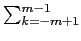
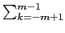
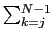
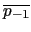
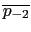
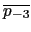
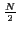
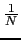
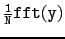
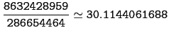

suivant: Les Exponentielles et les
monter: Transformée de Fourier
précédent: L'inverse de la transformée
Table des matières
Index
Voici un relevé des températures T, en degré Celsius, au temps t :
| t |
0 |
3 |
6 |
9 |
12 |
15 |
19 |
21 |
| T |
11 |
10 |
17 |
24 |
32 |
26 |
23 |
19 |
Quelle est la température à 13h45 ?
On a N = 8 = 2*m.
Le polynôme d'interpolation est :
p(t) = 1/2p-m(exp(- 2i mt/24) + exp(2imt/24)) + pkexp(2ikt/24)
mt/24) + exp(2imt/24)) + pkexp(2ikt/24)
et on a
pk = 1/N*Tkexp(2ik/N)
On tape :
q:=1/8*fft([11,10,17,24,32,26,23,19])
On obtient :
[20,-4.5+1.7*i,0.37+0.88*i,-0.77+0.22*i,0.5,
-0.77-0.22*i,0.38-0.88*i,-4.5-1.7*i]
ou avec plus de décimales :
p0 = 20.25,
p1 = - 4.48115530061 + 1.72227182413*i = ,
p2 = 0.375 + 0.875*i = ,
p3 = - 0.768844699385 + 0.222271824132*i = ,
p-4 = 0.5
car on a :
q = [q0,...qN-1] = [p0,..p-1, p-,.., p-1] = FN([y0,..yN-1]) = 
On calcule la valeur T0 du polynôme d'interpolation au point
t0 = 13, 75 = 13 + 3/4 = 55/4.
On a :
q:=[20.25,-4.48115530061+1.72227182413*i,-0.375+0.875*i,
-0.768844699385+0.222271824132*i,0.5,
-0.768844699385-0.222271824132*i,
-0.375-0.875*i,-4.48115530061-1.72227182413*i]
On pose :
pp:=[q[4],q[5],q[6],q[7],q[0],q[1],q[2],q[3]]
On a
pk = pp[k + 4] pour k = - 4...3
On tape :
t0(j):=exp(2*i*pi*(13+3/4)/24*j)
T0:=1/2*pp[0]*(t0(4)+t0(-4))+sum(pp[j+4]*t0(j),j,-3,3)
evalf(sincos(T0))
On obtient :
29.4863181684
On prévoit donc une température de 29.49 degrés Celsius.
On tape :
q1:=[q[4]/2,q[3],q[2],q[1],q[0]/2]
a:=t0(1) (ou a:=-exp(i*pi*7/48))
g(x):=r2e(q1,x)
evalf(2*re(g(a)))
ou encore
2.0*re(q[0]/2+q[1]*t0(1)+q[2]*t0(2)+q[3]*t0(3)+q[4]/2*t0(4))
On obtient :
29.4863181684
Remarque
Si on utilise le polynôme d'interpolation de Lagrange (on interpole par un
polynôme non périodique).
On tape :
l1:=[0,3,6,9,12,15,18,21]
l2:=[11,10,17,24,32,26,23,19]
subst(lagrange(l1,l2,13+3/4),x=13+3/4)
On obtient :

suivant: Les Exponentielles et les
monter: Transformée de Fourier
précédent: L'inverse de la transformée
Table des matières
Index
Documentation de giac écrite par Renée De Graeve